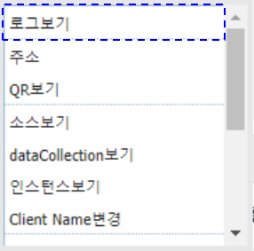
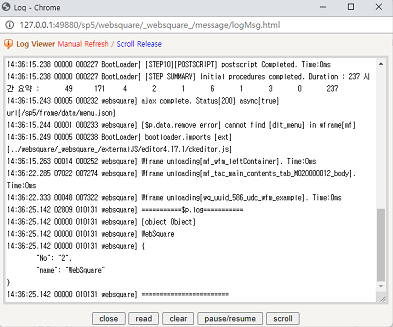
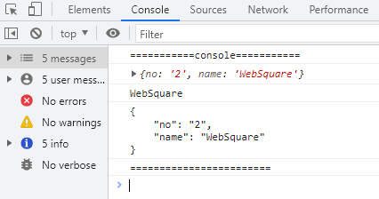

로그를 출력하는 예시입니다.
$p.log - 웹스퀘어 API로 로그 출력하기
console.log - 브라우저 API로 로그 출력하기
이 기능은 웹스퀘어 설정 파일(config.xml)의 설정값에 따라 동작되지 않을 수 있습니다.
자세한 설정 방법은 아래의 [6 참고 문서]의 개발 가이드 문서 링크를 확인해주시기 바랍니다.
1. 버튼 실행1을 클릭합니다.
2. 웹스퀘어 로그 출력 팝업에서 로그를 확인합니다.
1. 예제가 실행된 영역에서 키보드 [ctrl]를 누른 채로 [마우스 오른쪽 버튼]을 클릭합니다.
아래의 이미지와 같이 브라우저에 컨텍스트 메뉴가 출력됩니다.

2. 컨텍스트 메뉴 중 [로그보기]를 클릭합니다.
아래의 이미지와 같이 웹스퀘어 로그창이 팝업됩니다.

1. 버튼 실행2를 클릭합니다.
2. 브라우저의 [개발자도구]의 [콘솔(console)]탭에서 로그를 확인합니다.
아래의 이미지는 콘솔 출력 예시입니다.

var jsonObj = {"no":"2", "name":"WebSquare"}; var jsonStr = JSON.stringify( jsonObj ); var jsonStrWithTab = JSON.stringify( jsonObj ,null,"\t"); //웹스퀘어 API를 사용하여 로그 출력 $p.log("===========$p.log==========="); $p.log(jsonObj); $p.log(jsonObj.name); $p.log(jsonStrWithTab); $p.log("========================");
var jsonObj = {"no":"2", "name":"WebSquare"}; var jsonStr = JSON.stringify( jsonObj ); var jsonStrWithTab = JSON.stringify( jsonObj ,null,"\t"); //console 객체를 사용하여 로그 출력 console.log("===========console==========="); console.log(jsonObj); console.log(jsonObj.name); console.log(jsonStrWithTab); console.log("========================");
개발 가이드 문서 링크 : 웹스퀘어5 SP5 개발 가이드: 디버깅
[온라인 링크] www.w3schools.com의 console 객체 : https://www.w3schools.com/jsref/obj_console.asp